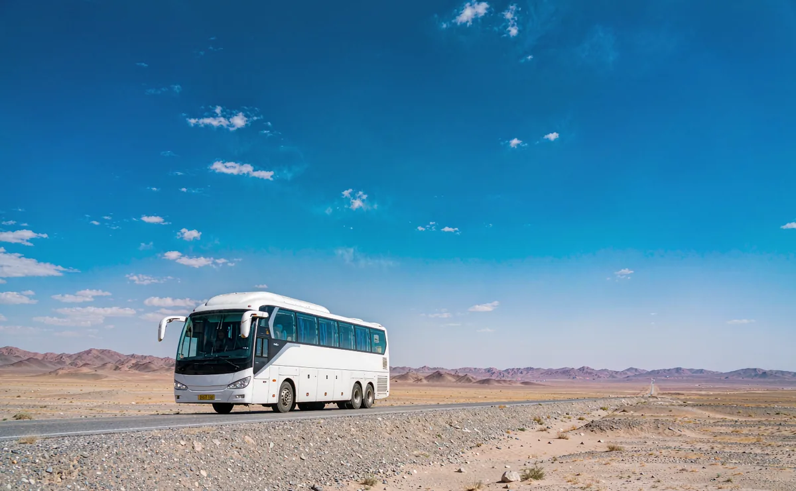

01
专属车辆与在地司机
每团一台车，不与他人拼车。司机为新疆本地资深驾驶，熟悉长距离路况、季节封路与在地语言。

Private groups
新疆幅员辽阔，景点之间动辄数百公里
专属车辆，专属行程
What is included
不看方案等级，这些是每一趟的基本配备。
每团一台车，不与他人拼车。司机为新疆本地资深驾驶，熟悉长距离路况、季节封路与在地语言。
想更深入认识维吾尔文化、丝路历史与在地饮食，可加购全程随车的私人导游，负责解说，也协助处理临时状况。
车辆投保旅游责任险与车辆险，司机持合法执照，车辆定期检修，符合当地旅游用车规范。
成行当天建立专属群组，行程调整、路况、餐食与住宿问题即时回覆，不必等到回饭店才找得到人。
Our vehicles
以下为常见车型；实际车款依当季调度与路线条件确认。
 2–3 人
2–3 人适合 2–3 人、行李不多，或要走伊昭公路、独库公路等山路。底盘高、视野好，机动性最强。
 4–6 人
4–6 人最常见的选择。4–6 人乘坐宽敞，第三排仍可放行李，长途移动与市区停车都方便。

7–12 人家庭或朋友多人同行适用，行李空间充足；部分山区路段会依规定调整行车安排。